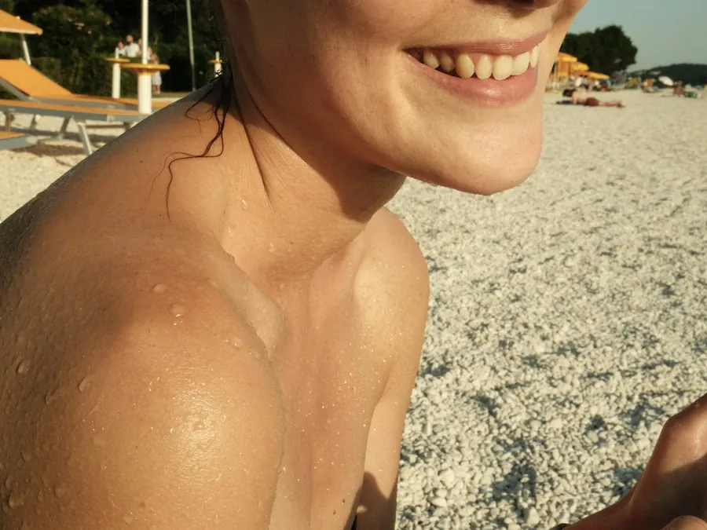

Lipotransferencia glútea
Recuperación de la lipotransferencia glútea,
semana a semana
Qué pasa en el cuerpo en cada etapa, y qué significa de verdad "evitar sentarte".
Ya tienes la fecha de tu lipotransferencia glútea agendada, y hay una pregunta que no te suelta: ¿de verdad no puedo sentarme en tres semanas? La respuesta corta es que sí hay una restricción real, pero no es "nada de silla": es cómo te sientas, no solo cuándo. Antes del paso a paso, vale la pena recordar en qué consiste la lipotransferencia glútea: se retira grasa de otra zona con liposucción, se purifica y se transfiere a los glúteos para darles volumen, sin implantes.
Semanas 1 a 3: por qué se evita la presión directa
La grasa que acaban de transferirte necesita riego sanguíneo nuevo para sobrevivir en su nuevo lugar. Según la Sociedad Estadounidense de Cirujanos Plásticos (ASPS), estar sentada por mucho tiempo en los primeros días daña esa grasa antes de que termine de integrarse. Por eso la indicación general en noon es evitar la presión directa sobre los glúteos durante las semanas 1 a 3, con el tiempo exacto según lo que veas en tus controles con tu cirujano.
Cómo sentarte sin presionar la grasa transferida
"No sentarte" no es literal: nadie espera que pases tres semanas de pie. La ASPS recomienda dormir boca abajo o de lado los primeros días, y cuando haya que sentarte, usar un cojín o almohada bajo la parte de atrás de los muslos, para que el peso quede en las piernas y no en los glúteos. Se suma la prenda de compresión día y noche, y los masajes o drenajes linfáticos que te indique tu cirujano.
Si trabajas sentada en una oficina, esto cambia tu regreso: no alcanza con pedir unos días y volver igual al escritorio. Lleva tu propio cojín, levántate cada rato y habla con tu jefe o con recursos humanos de una vuelta gradual, no de un interruptor que se prende el día después de la incapacidad.
Los primeros días: quién te ayuda en casa
Como toda cirugía, esta se hace con acompañante: un adulto contigo al menos los primeros días, para lo básico que cuesta hacer sola mientras duermes boca abajo o de lado y evitas sentarte normal. No es solo llevarte y traerte de la clínica: es tener quien te ayude a levantarte, a acomodar las almohadas y a estar pendiente de las señales que sí importan.
Mes 1 a 2: la vuelta gradual al ejercicio
Pasadas las primeras semanas, el ejercicio regresa poco a poco y con autorización de tu cirujano, no porque ya te sientas bien ese día. Caminar temprano ayuda a bajar el riesgo de coágulos, pero cargar peso, correr o entrenar directamente los glúteos esperan a que tu cirujano lo confirme en un control.
Mes 6: cuándo el volumen ya es el definitivo
Una parte de la grasa transferida se reabsorbe en los primeros meses: es normal, y no significa que algo salió mal. Lo que se integra en ese tiempo es lo que se queda. Por eso el volumen de la primera semana no es el real, y comparar una foto del día después con el resultado final no tiene sentido. Hacia el mes 6 el volumen ya está estable.
Señales que no se dejan pasar
Todo este cuidado no es por estética: es que la grasa inyectada por error dentro del músculo glúteo puede causar una embolia grasa, la complicación más seria de esta cirugía. Por eso se pone siempre por encima del músculo. El CDC revisó muertes de pacientes de EE. UU. tras cirugía cosmética en el exterior, y señaló la obesidad y combinar varios procedimientos en una misma cirugía como factores de riesgo, no el país donde se opera. Si sientes falta de aire, dolor en el pecho o el corazón late distinto a lo normal, se busca atención médica de inmediato, no se espera al siguiente control.
Cuánto dura cada etapa para ti, y el día exacto en que puedes sentarte sin cuidado, lo confirma tu cirujano en los controles, no un calendario genérico. Si ya decidiste operarte o todavía estás comparando opciones de contorno corporal, agenda tu valoración presencial, o revisa primero si tu caso es de cirugía o de un tratamiento no quirúrgico. Si lo que te preocupa es la seguridad de operarte en Colombia viniendo de afuera, hay más detalle en esta guía sobre lipotransferencia glútea para quien viaja desde EE. UU.
Procedimientos de esta guía
Esta guía es informativa y no reemplaza una valoración médica. La indicación, los tiempos de recuperación y la fecha de regreso los define tu especialista en persona. Todo procedimiento tiene riesgos y los resultados varían de una persona a otra.
Preguntas frecuentes
Preguntas frecuentes
¿Cuándo me puedo sentar después de la lipotransferencia glútea?
La indicación general es evitar la presión directa sobre los glúteos durante las semanas 1 a 3. El día exacto en que puedes sentarte sin cuidado especial te lo confirma tu cirujano en los controles, según cómo evoluciones.
¿Qué pasa si me siento normal antes de tiempo?
Estar sentada por mucho rato en los primeros días puede dañar la grasa recién transferida, antes de que termine de integrarse en su nuevo lugar. Por eso se usa un cojín bajo los muslos mientras pasa ese tiempo.
¿Cuánto dura la incapacidad?
Aproximadamente 2 a 3 semanas, igual que otras cirugías de contorno corporal. Tu cirujano la ajusta según tu caso.
¿Cuándo puedo volver a hacer ejercicio?
De forma gradual entre el mes 1 y el 2, y siempre con autorización de tu cirujano, no por cómo te sientas ese día. Caminar temprano sí ayuda a bajar el riesgo de coágulos.
¿Cuándo se ve el volumen definitivo?
Una parte de la grasa transferida se reabsorbe en los primeros meses. Lo que se integra en ese tiempo es lo que se queda, con el volumen ya estable hacia el mes 6.
¿Qué señales no debo dejar pasar?
Falta de aire, dolor en el pecho o el corazón latiendo distinto a lo normal. Ahí se busca atención médica de inmediato, no se espera al siguiente control.
Blog
Sigue leyendo.
 Antes de tu cirugía: la lista que de verdad importaNo es la cirugía lo que más se complica: es llegar sin los exámenes, sin ajustar los medicamentos y sin la casa lista.Leer
Antes de tu cirugía: la lista que de verdad importaNo es la cirugía lo que más se complica: es llegar sin los exámenes, sin ajustar los medicamentos y sin la casa lista.Leer Operarte en Medellín si vives en otra ciudadBogotá, Cali, Barranquilla: cómo cuadrar valoración, cirugía, días de estadía y controles en un solo viaje.Leer
Operarte en Medellín si vives en otra ciudadBogotá, Cali, Barranquilla: cómo cuadrar valoración, cirugía, días de estadía y controles en un solo viaje.Leer
Melasma: por qué aparece y cómo se controlaNo es una mancha cualquiera, y por eso no se trata con la primera crema que recomiendan en redes.Leernoon Clinic
Tu valoración
Todo empieza con una conversación con nuestros especialistas.
Te respondemos en minutos por WhatsApp, en horario de atención. Resolvemos tus dudas y agendamos tu valoración presencial; por WhatsApp no diagnosticamos. Por qué noon